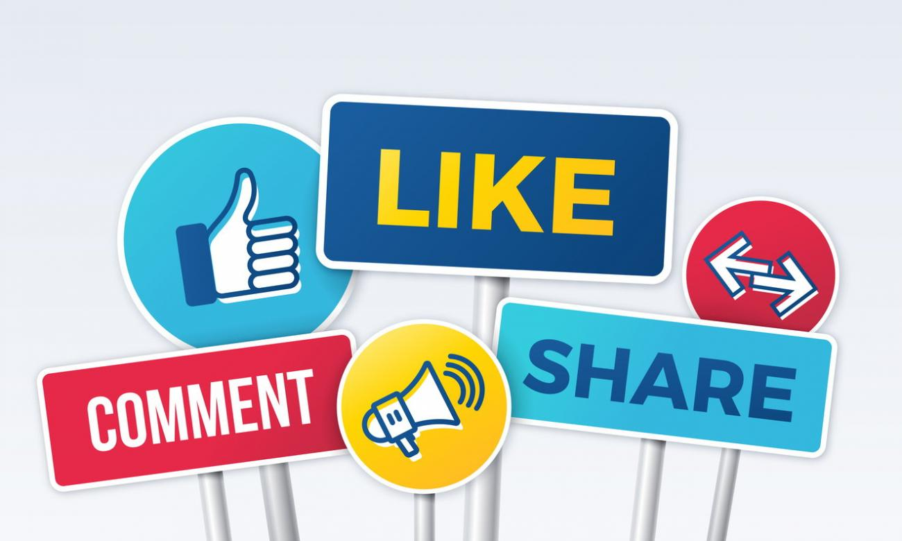

tags: democracy, property, technology, value creation
9 min read

We all sort of know the problems, right?
Monopolies. Lock-in. Stream addiction. Reality bubbles. Billionaires seeking market dominance. All other values taking a back seat to growth.
I don't think I need to elaborate. If you're reading this, then you're probably well aware of all these concerns.
But what do we do about them?
Here are a couple of ideas. Radical but practical. And very doable.
In all of the areas where we have these concerns, we really have three separate – and very separable – sorts of activities going on.
Notice that the original architects of the World Wide Web got this right: lots of different content creators; lots of different hosting companies and platforms; neutral delivery pipes; multiple ways of organizing and packaging content (portals, search engines, etc.); lots of different clients – web browsers, and eventually other sorts of more specialized apps as well – to view this content.
But look at where we're at today.
Facebook: content creation, packaging, distribution, and viewing all being controlled by a single company.
Instagram: ditto (plus being controlled by the same company, Facebook).
Twitter: the same.
Netflix: content creation, packaging and distribution all controlled by a single company.
Fox News: content creation, packaging and distribution all controlled by a single company.
And I could go on.
Do we have to put up with this?
Nah.
Chris Hughes made a great point recently in his New York Times opinion piece titled “It's Time to Break Up Facebook.” I can't say it any better, so I'll quote extensively here.
America was built on the idea that power should not be concentrated in any one person, because we are all fallible. That's why the founders created a system of checks and balances. They didn't need to foresee the rise of Facebook to understand the threat that gargantuan companies would pose to democracy. Jefferson and Madison were voracious readers of Adam Smith, who believed that monopolies prevent the competition that spurs innovation and leads to economic growth.
A century later, in response to the rise of the oil, railroad and banking trusts of the Gilded Age, the Ohio Republican John Sherman said on the floor of Congress: “If we will not endure a king as a political power, we should not endure a king over the production, transportation and sale of any of the necessities of life. If we would not submit to an emperor, we should not submit to an autocrat of trade with power to prevent competition and to fix the price of any commodity.” The Sherman Antitrust Act of 1890 outlawed monopolies. More legislation followed in the 20th century, creating legal and regulatory structures to promote competition and hold the biggest companies accountable. The Department of Justice broke up monopolies like Standard Oil and AT&T.
So the key question is not whether we can break up a company like Facebook.
If we have the political will to do so, then it can certainly be done. We've done it before.
But I think a question of at least equal importance is how we should break up such companies.
Here's my proposal: we should mandate, through new anti-monopoly laws, the separation of content creation and viewing from content packaging and distribution.
How would this work?
That's where the next part of the proposal comes in.
In order to make this work, we would need open standards for content publishing and content viewing.
These already exist in many areas, and we take them for granted today.
Think about email for a minute. (And try not to focus on the problems of spam and your overflowing inbox – those are topics for a different day.) You can compose and send an email from a Mac, from a Windows PC, or from your smart phone. And for each of these, you can choose a client for composing and sending those messages. You can choose your email provider – Apple mail, or Gmail, or FastMail or something else. And even though you may send an email to me using Gmail on your Android device, I can read it without any problems sitting at my iMac and using the Airmail app.
Why should social messaging be so different? Why is it that, in order to keep up with what my brother is doing in Virginia while I sit here in Seattle, we both have to be 100% locked in to Facebook for the whole experience?
The difference, quite simply, is that we have widely recognized open standards for email, but not for social messaging. Open standards allow interoperability, and that enables competition, and that provides choice.
And let's face it: Despite what the leaders of these various messaging services will try to tell us, the differences between them are not so great that it would be hard to arrive at standards allowing interoperability. What are we sending? A few photos, links and/or a bit of text. Can we come up with open standards for content like this? You bet we can. A project called Mastodon is already paving the way, demonstrating how this can be done.
This is not rocket science, folks. We can do this. Again, all it requires is political will.
Note that my proposal above was to separate content creation and viewing from packaging and distribution.
Let me drill down on the packaging piece of that equation for a minute.
What I mean by packaging, especially for social media, is the composition of a stream of content to be presented to an individual for viewing.
Today, if I want to keep up with my friends on Facebook, then I have no choice but to allow Facebook to compose that stream for me. Which means that I have no idea why I'm seeing certain bits of content, and I have no idea what other content I might be missing.
With my proposal I would have a choice of providers for packaging and distribution. Maybe some of them would allow me to pay a small fee so I wouldn't have to see any ads. Maybe some of them (as with DuckDuckGo in the web search space) would show ads, but without personally tracking me. Maybe some of them would allow me to view the actual algorithm being used to compose my feed. Maybe some of them would even allow me to tweak that algorithm, or write my own. Perhaps some would be nonprofits, and run on donations, Ã la Wikipedia. Who knows how many options would emerge? But I would have a choice, and a free and open market would then be able to create a variety of solutions to satisfy a bunch of different situations and needs.
Choice is doubly important because, when I have to make decisions about which service I'll choose, I'll think more carefully about how those services work and what they're doing for – and to – me.
When people don't have a choice, they tend to just accept what they're given and don't think much more about it.
And we need to think carefully, and make conscious choices, about what media is being fed to us, and why.
Part of the resistance to breaking up the big tech monopolies comes from the old idea that the entire point of anti-trust is to reduce prices paid by consumers.
And since, of course, companies like Facebook and Google and Twitter make their money on the collection and commercial use of our personal information, and not on direct sales to consumers, this traditional argument doesn't hold much weight.
However, as open source advocate Richard Stallman says in talking about free software, we need to think about “free” as in “free speech,” not “free beer.” Today many of the tech giants are offering us the media equivalent of free beer. But our speech is increasingly being controlled and constrained and harnessed for profit by these same big tech monopolies.
Freedom of speech is not just about everyone getting to say whatever they want. It's also the freedom to control how our speech is used, and the freedom to choose what speech we pay attention to. These are the freedoms we're sacrificing today by using companies that charge no fees for their services.
Don't get me wrong. I'm not against capitalism or capitalists. I'm all for entrepreneurial innovation and making money. And I'm OK with providing a decent return on investment for first movers.
But capitalism is about more than just generating new unicorns, and then watching them grow fatter and fatter.
Capitalism is primarily about enabling competition among providers, providing choice to consumers and serving society.
To paraphrase John Sherman, and to update his focus a bit to reflect our current concerns:
If we will not endure a king as a political power, we should not endure a handful of kings over the necessary communication channels of modern life.
If we would not submit to an emperor, we should not submit to a few autocrats of the news and social media with power to prevent competition and to reap endless financial gains through the commodification of our social discourse.
It's clear that the big digital media companies today have too much power concentrated in too few hands. But let's be smart about how to fix this problem. And let's not be afraid to face it head-on. We don't need more congressional hearings that just provide these same media outlets with another day's worth of political posturing that they can serve up to entertain their viewers. We need legislative action. And we need legislation that will serve us, not just for one or two news cycles, or even one or two election cycles, but that will stand the test of time and serve the American people over the long haul.
We can do it.
It's nothing we haven't done before.
It's just one of those things we've been putting off for too long while we've been glued to our screens.